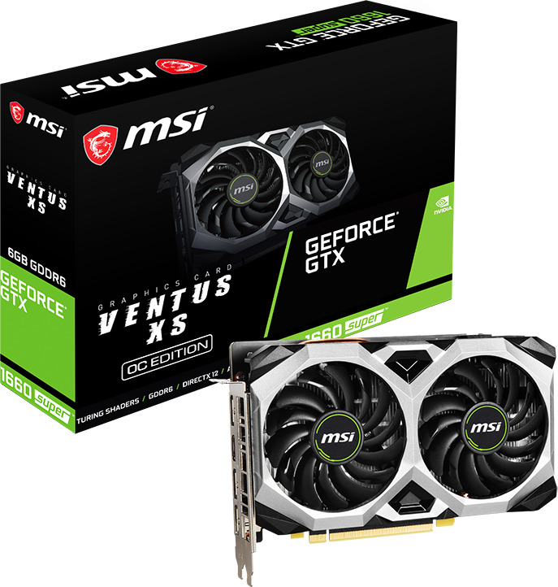
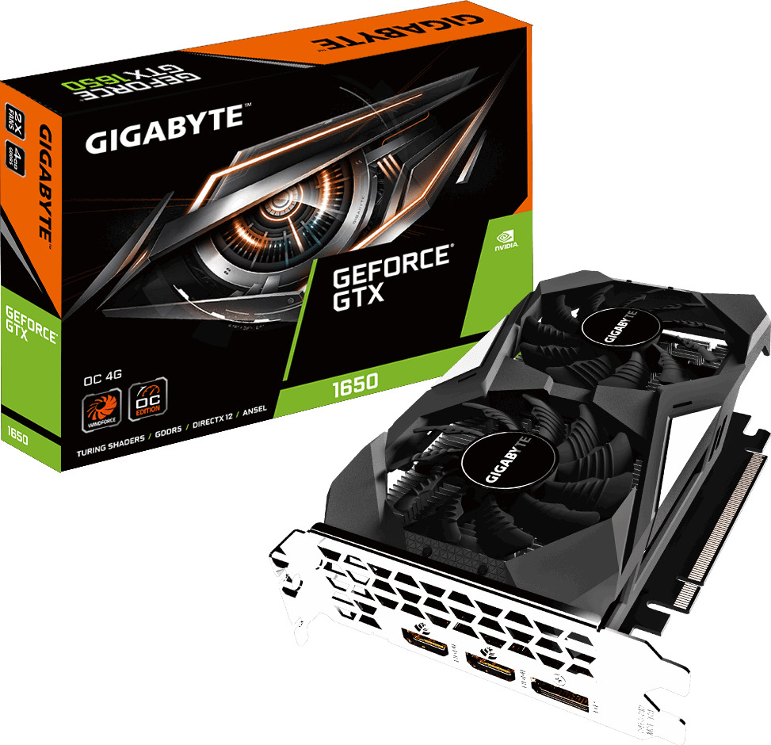

Gigabyte GeForce GTX 1660 6GB OC βασίζεται στην αρχιτεκτονική NVIDIA Turing με ενσωματωμένη μνήμη 6GB GDDR5, ταχύτητα επεξεργαστή 1785MHz και σύστημα ψύξης Windforce 2X

MSI GeForce GTX 1660 Super 6GB GDDR6 Ventus XS OC Κάρτα Γραφικών PCI-E x16 3.0 με HDMI και 3 DisplayPort
- Κωδικός Προϊόντος: 020202
- Τιμή:282,54 €
- Βαθμολογία: 4,7/5
Προβολή Προϊόντος
Mid-range κάρτα γραφικών με μνήμη 6GB DDR6, έως 1815Mhz ταχύτητα επεξεργαστή, τρεις θύρες DisplayPort και μία θύρα HDMI 2.0. Υποστηρίζει μέχρι τέσσερις οθόνες, διαθέτει G-Sync και η μέγιστη ανάλυση είναι 7680x4320.
Απαιτεί τροφοδοτικό 450W και το μήκος της φτάνει τα 247mm

MSI GeForce GTX 1660 Super 6GB GDDR6 Gaming X Κάρτα Γραφικών PCI-E x16 3.0 με HDMI και 3 DisplayPort
Κωδικός Προϊόντος: 020203
Τιμή:345,00 €
- Βαθμολογία: 4,9/5
- Προβολή Προϊόντος
Mid-range κάρτα γραφικών με μνήμη 6GB DDR6, έως 1830Mhz ταχύτητα επεξεργαστή, τρεις θύρες DisplayPort και μία θύρα HDMI 2.0.
Υποστηρίζει μέχρι τέσσερις οθόνες, διαθέτει G-Sync και η μέγιστη ανάλυση είναι 7680x4320.
Απαιτεί τροφοδοτικό 450W και το μήκος της φτάνει τα 247mm

Gigabyte GeForce GTX 1660 Super 6GB GDDR6 OC Κάρτα Γραφικών PCI-E x16 3.0 με HDMI και 3 DisplayPort
- Κωδικός Προϊόντος: 020204
- Τιμή:336,00 €
- Βαθμολογία: 4,8/5
- Προβολή Προϊόντος
Η Gigabyte GeForce GTX 1660 Super 6GB OC βασίζεται στην αρχιτεκτονική NVIDIA Turing με ενσωματωμένη μνήμη 6GB GDDR6, ταχύτητα επεξεργαστή 1785MHz και σύστημα ψύξης Windforce 2X.

Gigabyte GeForce GTX 1650 4GB GDDR5 OC Κάρτα Γραφικών PCI-E x16 3.0 με 2 HDMI και DisplayPort
- Κωδικός Προϊόντος: 020205
- Τιμή:198,31 €
- Βαθμολογία: 4,8/5
- Προβολή Προϊόντος
Υπερχρονισμένη έκδοση της κάρτας με μνήμη 4GB DDR5, έως 1710Mhz ταχύτητα επεξεργαστή, μία θύρα DisplayPort και 2 θύρες HDMI 2.0.
Υποστηρίζει PCI-E 3.0x16 και ταυτόχρονη μετάδοση μέχρι και τρεις οθόνες.
Διαθέτει G-Sync, DirectX 12 και η μέγιστη ανάλυση είναι 7680x4320. Απαιτεί τροφοδοτικό 300W και το μήκος της φτάνει τα 191mm